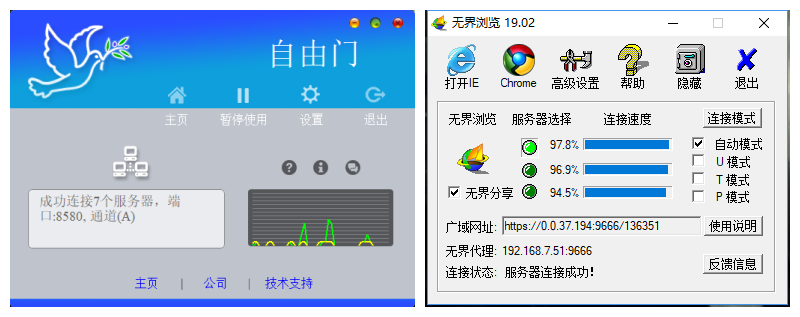
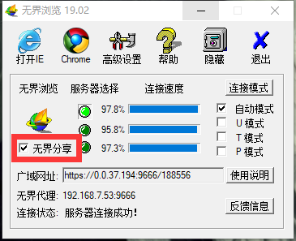
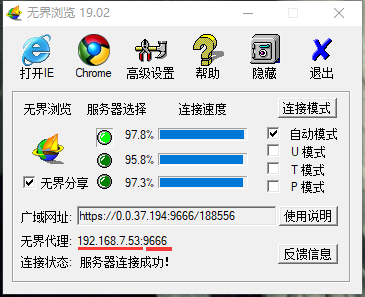
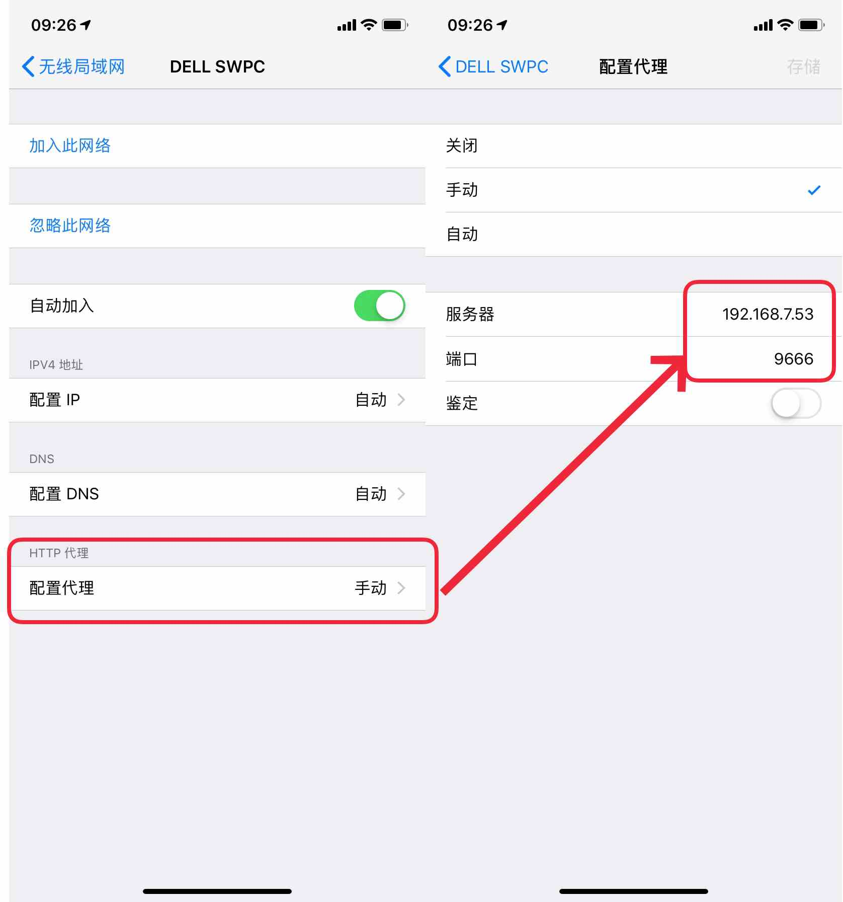
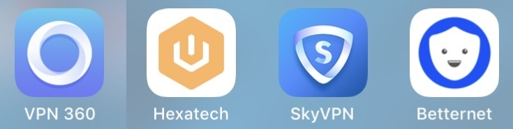

包含PC端和手机端（iOS）。
两个软件任选其一即可。
★注：本软件来源于网络，此页面仅站主本人学习交流，请勿分享给他人，如有侵权请联系删除。检测到软件内含非常规性宗教色彩，与站主本人无关，软件开放商的言论本人不予支持。
1、打开分享功能

2、打开电脑热点，在手机上进入该WiFi的设置页面，设置手动代理，将广域网址内的服务器和端口号填入，重新连接此WiFi即可。


（不稳定，不推荐使用，建议使用PC端软件开热点给手机。）
注册美区AppleID（？），在AppStore退出当前AppleID并登录美区AppleID，会自动跳转到美区AppStore，可下载美区的优质软件。
注意一定不要退出iCloud。
